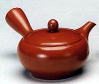
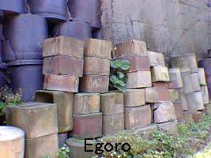

| Tokoname, Japan
Redware
Redware
teapots are famous as typical Tokoname ware, so that one remembers
red-brown teapots immediately when one hears the name of Tokoname.
It was relatively earlier in the history of Tokoname ceramics that
redware was introduced. It was during the period from 1861 to 1864.
Tea ware for green tea like teapots had been produced since the
early 19th century in Tokoname following the popularity of the custom
of green tea drinking from the late Edo era. Typical tea ware during
this period was redware produced in China. Mr. Jyumon Sugie and
Nikou Kataoka started to make redware for the first time in Tokoname.
Tokoname redware was made by the clay from rice fields which contained
lots of iron. This clay gave the ware a rich deep red color. Producing
redware drastically changed Tokoname's ceramic industry. Potters
who specialize in making redware teapots appeared in addition to
those who had made conventional large products such as jars and
pots. Important to the development of Tokoname ceramics was a Chinese
potter Jin Shi Heng who was invited to teach Chinese teapot making
technique to Tokoname potters in 1878. This greatly helped the rapid
development of redware teapots. The technique of carving small letters
on teapots started from the time Jin Shi Heng came to Tokoname.
Jin Shi Heng's visit extremely influenced not only ceramic making
techniques but the craftsmanship which Tokoname's ceramic industry
had previously lacked.
A square down-draft kiln with two mouths
A square down-draft kiln with two fire mouths was invented in the
late Meiji era. They were the result of improvements on conventional
kiln designs based on the latest European technology. Two fire mouths
were made on the each side of the kiln and the entrance at the front.
The flames coming from the mouths move up over the partition or
bag wall set in the kiln. The two flames collide on the ceiling,
and go down to the floor and out to the chimney through the flue.
The sizes of kilns were diverse. The largest one was 19.4m x 6.4m
long and the average one was 7.3m x3.9m. The ceiling has an arch
shape. The chimney is built of bricks. This type of kiln rapidly
prevailed during the Taisho era. Eighty-six kilns existed in Tokoname
in 1929. Coal was used as a fuel in the early days, heavy oil gradually
took its place because it was easier to control and it reduced labor
costs. However as anti air pollution laws were tightened, and cheap
heavy oil was not able to reach the standards, production costs
to buy expensive heavy oil soared, which made these kilns obsolete.
Slowly these kilns disappeared.
Ceramic pipes, flower pots, bonsai pots, charcoal braziers, ornaments,
jars and pots were fired in square down-draft kilns with two fire
mouths.
Pottery and Porcelain
Pottery quite simply is fired clay. Porcelain is made of crushed
stones. The firing temperature of porcelain is higher than that
of pottery. Porcelain is baked at around 1,300 C compared with pottery
which require lower temperatures. In Tokoname red clay is fired
at about 1,150 C and mountain clay about 1.200 C.
Craftsman with traditional techniques (Dento-kougeishi)
Dento-kougeishi is a title given to a craftsman designated by the
minister of International Trade and Industry Ministry as a person
who has excellent traditional techniques. He or she has to be nominated
by people who have more than 12 years experience with ceramics in
the area producing traditional arts and crafts.
Egoro or Saggar
Egoro
is a container for loading kilns which is also known as "Saya".
They are used when products don't require to be touched directly
by flames. They protect the products from the combustion of wood
and coal and from unnecessary color changes. Moreover they are piled
up in the kiln allowing for greater kiln efficiency. Egoro is fired
many times, subsequently its surface acquires a natural glaze effect.
Some of them have an appeal equivalent to ceramic works.
Production of the industries in Tokoname(surveyed on December 31,1996)
Total production of the industries in Tokoname
- 197,095,560,000
Production related to the ceramic industry
- 111,178,460,000 (56.4%)
Items related to the ceramic industry
Sanitary ware - 55,522,210,000
Ceramic and porcelain tiles - 42,065,810,000
Table ware - 2,596,760,000
The number of workers related to the ceramic industry
(4 employees or more).....................4,726
(3 employees or under )..................... 451
The number of companies related to the ceramic industry
(4 employees or more)........................193
(3 employees or under ) .....................211
Clay
There are various kinds of materials used to make ceramics. Roughly
divided, the major kinds are pottery and porcelain. Clay is for
pottery, crushed stones for porcelain. In Tokoname crushed stones
is used for sanitary ware and construction tiles. On the other hand
different types of clay is used according to the products. Some
potters make their own original clay mixing many kinds of clays
to make their works distinguished. In addition, clay factories produce
a wide range of clays, as a result people in the pottery business
can buy suitable clays according to their needs.
Today, various types of clays from other pottery areas come to Tokoname,
so many clays from all over the country are available here. Material
for porcelain products has to be brought to Tokoname from other
places. Clay also comes from Seto, Shigaraki and Iga. In the old
days each pottery town had one specific and unique type of ceramics
due to its original clay, but nowadays it has changed.
Next > Changes in Tokoname Ceramics
More Articles
|